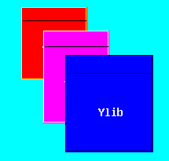
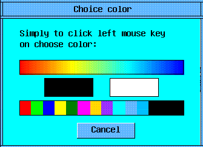
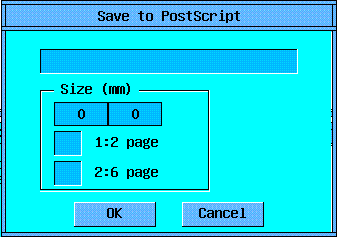
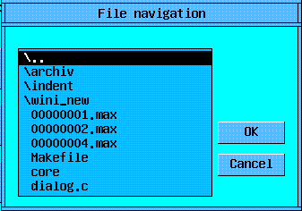
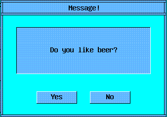

L i b r a r y Y z o n e

The contents:
- Introduction
- 1. OPEN: window-graphical and system primitives
- 2. MORE: useful additions and improve GUI functions
- 3. WIND: control elements of dialogue
- Conclusions
Introduction
Yzone - universal cross-platform library for creation of the graphic modular
programs for various platform UNIX and Microsoft Windows. Yzone - the library
of a broad profile, however priority in it is the scientific, component -
algorithmic approach.
Introducing the library Yzone, it is necessary to mark the following moments
and idiosyncrasies:
All listed above allows to hope, that the library Yzone will be useful to the
broad audience of the programmers: from beginners to the professionals, from
wishing to write the first graphic program up to the developers of composite
big programmatic systems.
1. OPEN: window-graphical and system primitives
In Yzone the original mixed window system (system and internal windows) is
designed:
Such approach allows to make a system more floppy and generalpurpose, to
reduce held system resources and to speed up graphic visual dialogue response.
In case of the simple application there is one main system window, in which one
the means internal windows realise user interface. In addition the system
dialog boxes are possible also.
Everyone the window-module is described unified "callback"-function, the body
by which one represents one large "switch"-operator. Its labels "case" are
entry points in a window procedure and respond for processing of the different
messages, going at a module.
At any program of the library, written with Yzone there should be main
"callback"-function MAIN, which one is called first after start of the program.
Thus, the standard program "Hello World" (with a padding button) will look
so:
/*-------------------------------MAIN-----------------------------------*/
long
MAIN (PFUNC_VAR)
{
switch (message) {
case YCREATE:
YInitWIND ();
YBigWindow (NULL, hello_proc, "Main Window", 0,0, 200,150, 0,0,0,0,
YColor("yellow"));
break;
}
RETURN_TRUE;
}
/*------------------------------hello_proc------------------------------*/
long
hello_proc (PFUNC_VAR)
{
static int hPush1;
switch (message) {
case YOPEN:
case YDRAW:
YDrawRectF (0,0, WND->w,WND->h, WND->color);
YWnd (&hPush1, PUSH, "Hello World!", 20,20, WND->w-40,WND->h-40,
0,0,0,0, YColor("lime"));
break;
case YCLOSE:
break;
case YPUSH:
if (mes1 == hPush1) exit(0);
default: ;;
}
RETURN_TRUE;
}
/*----------------------------------------------------------------------*/
Description of some messages
YOPEN - the window opens;
YDRAW - the window is drawn;
YCLOSE - the window is closed;
YSETFOCUS - the window receives 'focus';
YKILLFOCUS - the window loses 'focus';
YDATAMADE - there was the change in one of 'child' contol elements;
YTIMER - message from the timer (through given intervals);
YKEYBOARD - keyboard key is pressed;
YLMOUSEDOWN - left mouse key is pressed;
YLMOUSEUP - left mouse key is released;
YLMOUSEMOVE - mouse movement at a pressed left key;
YLMOUSEDOUBLE - double 'click' by the left mouse key;
YRMOUSEDOWN - right mouse key is pressed;
YRMOUSEUP - right mouse key is released;
YRMOUSEMOVE - mouse movement at a pressed right key;
YLRMOUSEMOVE - mouse movement at pressed left and right keys;
YKEYWORD0 |
YKEYWORD1 |
YKEYWORD2 | Additional messages, dependent
YKEYWORD3 | on a context of their use;
YKEYWORD4 |
YKEYWORD5 |
Description of some functions
MAIN - first pseudo-window function receiving management;
1) Group of the basic window functions:
YWndBig - create a 'real' window (in terms of the window manager);
YWnd - create 'internally' window (in terms OPEN);
YCloseAll - close a window, previously by closing all child;
YSend - send the message into other window or module;
YGoto - send message to itself (onto other entrance point);
YPost - put this message in queue;
YSetTimer - start 'timer' for a window;
YKillTimer - stop 'timer';
YSetProcess - start 'process' for a window;
YKillProcess - stop 'process';
YGetData - receive some data from the specified window;
YGetFocus - receive the identifier of a window, owning 'focus';
YSetFocus - set 'focus' for a window;
YUpdateWnd - redraw window with updated data;
YWndGroupBegin - 'opening bracket' for group of windows (is usual for CHECK-s);
YWndGroupEnd - 'closing bracket';
YDlg - run dialog with the specified window procedure;
YDlgEnd - finish dialog (to close);
YExit - finish work with Y/Open;
2) Basic graphic items (functions of drawing):
YPaintPixel - single pixel;
YPaintLine - ordinary line ;
YPaintRectB - rectangular (only border);
YPaintRectF - rectangular (filled without border);
YPaintRectFB - rectangular (filled with border);
YPaintPolyF - polygon filled;
YPaintString - horizontal string;
YPaintArcB - arc fitting inside a rectangle;
YPaintArcF - filled arc;
4) Other system and graphical functions:
YDirRead - receive as the list contents of a directory;
YDirChange - change a current directory;
YTimeGet - receive system time;
YTimePause - pause in milliseconds;
YBeep - sound signal;
YRandF - generation of pceudo-random value as 'float';
YBeginGroup - opening bracket for group of graphic functions;
YEndGroup - closing bracket;
YImageGet - save image of rectangular area of the screen into memory;
YImagePut - draw stored image;
YImageFree - destroy a stored image by clearing memory;
YSetXorMode - establish a mode of drawing XOR;
YSetCliping - set rectangular area with a 'cliping' mode;
YSetFont - set current font;
YStringW - length of line in pixels;
YStringH - height of line in pixels;
YMouseForm - change of a graphic mouse shape;
YPtInRect - whether a point inside of a rectangular gets;
YColorToScale - find an index of given colour in a palette Scale;
YColor - set color from standart set;
YScale - set color from solid pallete;
Work with Colors
At initializing a graphic system in Yzone there is a reserving and installation
of two different colour tables:
the standard set - widely known generally accepted color names (in the current
version will be used 16 colours originally fixed behind a graphic pallet
Windows VGA);
| | "black" |
| "green" |
| | "silver" |
| "lime" |
| | "gray" |
| "olive" |
| | "white" |
| "yellow" |
| | "maroon" |
| "navy" |
| | "red" |
| "blue" |
| | "purple" |
| "teal" |
| | "fuchsia" |
| "aqua" |
solid graphic pallet - colour "unidimensional" graphic pallet formed on some
law (linear, logarithmic etc.); it is convenient for using for different
problems of visualization of the distributed data.
2. MORE: useful additions and improve GUI functions
In this section some useful functions are described. They ream capabilities of
the "C" language and easy to the programmer his hard work :-) But the main
improvements concern graphic functions; in them the following additions are
entered:
Description of some functions:
1) Imroved graphic functions (with scalling and saving to
Meta and PS formats):
YDrawLogo - logotype library Y/Open;
YDrawLine - ordinary line ;
YDrawRectB - rectangular (only border);
YDrawRectF - rectangular (filled without border);
YDrawRectFB - rectangular (filled with border);
YDrawTriB - triangle (only border);
YDrawTriF - triangle (filled without border);
YDrawTriFB - triangle (filled with border);
YDrawFourB - quadrangle (only border);
YDrawFourF - quadrangle (filled without border);
YDrawFourFB - quadrangle (filled with border);
YDrawPolyF - polygon filled;
YDrawCircF - circle filled;
YDrawXorLine - line in a mode XOR;
YDrawScale - palette of colors SCALE as a rectangular;
YDrawColmap - rectangular color card Colmap;
YDrawColmapB - too most, but with drawing border;
YDrawSymbol - special graphic symbols and elements;
YDrawHString - horizontal string;
YDrawVString - vertical string;
YDrawStrings - multilower case horizontal text;
YDrawRectText - text in centre of a rectangular;
YDrawHStringImp - improved YDrawHString;
YDrawPixel - single pixel;
2) Other functions:
YStrCopy - copying a string variable array;
YStrCmp - the comparison of two lstring (returns bool value);
YError - message on error and emergency end;
YWarning - message on error without emergency end;
YInt - reduction to a type 'int' with correct round;
YPutInCicl - reduction 'int' inside of a given interval;
YParInit - initialization variable from symbolical string;
3) Function for work with Colmap:
YColmapCreate - create;
YColmapInit - initialize;
YColmapBeginDraw - set a rectangular for a conclusion in Colmap;
YColmapDrawPixel - draw pixel (if gets);
YColmapEndDraw - finish a mode of drawing in Colmap;
YColmapGet - get pixel;
YColmapPut - put pixel;
8) Function for work with 'Meta':
YMetaCreate - create;
YMetaInit - initialize;
YMetaBegin - begin a mode;
YMetaEnd - finish a mode;
YMetaDrawTo - send for drawing into window;
YMetaToPS - save into PostScript;
YMetaToScr - draw in the specified area of the screen;
YMetaW - get width;
YMeta_dlg - window function of dialog 'Save_to_PS';
3. WIND: control elements of dialogue
In Yzone all control elements work standardly, except for a
field 'DECIMAL', to operate which it is possible only by 'mouse':
- pressing the left key - reduces meaning of a field,
- and the pressing right - increases meaning of a field;
Thus the unitary pressing changes meaning per unit of, and
the long pressing will make continuous change, and, theme faster,
than further cursor from an initial place is removed!
Description of some functions:
YFindFile - run dialog 'FindFile';
YMessageBox - run dialog 'essage';
YWaitBegin - start dialog WAIT;
YWaitEnd - finish dialog WAIT;
YWaitSend - send the message (how many is made) into WAIT;
YPutWnd - 'put' a window onto panel LAYOUT;
PUSH - standard button;
CHECK - element of a type 'tag' (with cross-hair lines);
LIST - list of chosen elements (string constants);
EDIT - field of editing string variable;
DECIMAL - field for change decimal variable;
FLOATS - field of editing 'float' variable;
YTEXT - not edited information textual field;
COLORS - element for a choice of color;
RAMKA - universal window with 'line' of control buttons;
SCROLL - scrolling line (for the various purposes);
DITTO - empty window procedure;
BOOK - 'book' with bookmarks;
ABOUT - standard panel with the information on the authors and program;
PROCESS - panel with buttons of management by window 'process';
LAYOUT - panel for accommodation on it of other windows;
The brief description of some dialogue blocks is further given.
Usually they called as system windows and are certain for performance.

Dialogue 'Choise color'
from above - solid graphic pallet,
from below - standard set,
separately are allocated black and white colour;
For selection, simplly click the left-hand
key of the mouse on the necessary colour.

Dialogue 'Save_to_PS'
Print, and is exacter, save to PostScript.
Size(mm) -- panel for defining EPS image size;
it is possible to set in mms;
and it is possible to set concerning the size of a standard sheet
of a paper A4;

Dialogue 'FinfFile'
Carries out navigation on directories of file systems and
choice of a file for the subsequent work with it.
Control -- with the help of standard means (button, mouse, keyboard).

Dialogue 'Message'
To the user some message is given out, on which it is required
to answer (for example to press the button "Yes" or "No").
Conclusions
You shortly have acquainted with Yzone - generalpurpose cross-platform
GUI-library. From set of similar libraries Yzone distinguishes the whole set of
the realised original ideas and properties. Yzone - new, dynamically developing
library and, unfortunately, it is not yet free from errors and discrepancies,
that hereinafter will be corrected.
Some members of control and input boxes also are in stage of adaptation, but
not waiting the terminations of this process, the users have a capability "to
be picked up" to the already developed library FLTK
(http://fltk.easysw.com)
and to take advantage of its means GUI.
In further, certainly, all deficiencies will be removed, and the interface is
advanced in indispensable volumes. The programmer operating Yzone, will forget
about existence of different platforms and padding libraries.
Only Yzone and you!! Good luck!!
|